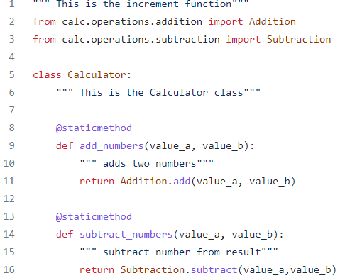

What are OOP's Concepts?
Object-Oriented Programming(OOP), is all about creating “objects”. An object is a group of interrelated variables and functions. These variables are often referred to as properties of the object and functions are referred to as the behavior of the objects. These objects provide a better and clear structure for the program.
For example, a car can be an object. If we consider the car as an object then its properties would be – its color, its model, its price, its brand, etc. And its behavior/function would be acceleration, slowing down, gear change.
Another example- If we consider a dog as an object then its properties would be- his color, his breed, his name, his weight, etc. And his behavior/function would be walking, barking, playing, etc.

Polymorphism :-
. In programming, polymorphism means the same function name (but different signatures) being used for different types.
# A simple Python function to demonstrate
# Polymorphism
def add(x, y, z = 0):
return x + y+z
# Driver code
print(add(2, 3))
print(add(2, 3, 4))
OUTPUT - 5 9
In our Program :-
The Calculator class in our program has five different methods with a pre-fixed result as 0 and four different variables in four different methods which demonstrates Polymorphism
Encapsulation:-
Encapsulation is one of the fundamental concepts in object-oriented programming (OOP). It describes the idea of wrapping data and the methods that work on data within one unit. This puts restrictions on accessing variables and methods directly and can prevent the accidental modification of data. To prevent accidental change, an object’s variable can only be changed by an object’s method. Those types of variables are known as private variable. A class is an example of encapsulation as it encapsulates all the data that is member functions, variables, etc

In our Program :-
The result is made local and the variable is declared in the function with the object itself.
Abstraction:-
An abstract class can be considered as a blueprint for other classes. It allows you to create a set of methods that must be created within any child classes built from the abstract class. A class which contains one or more abstract methods is called an abstract class. An abstract method is a method that has a declaration but does not have an implementation. While we are designing large functional units we use an abstract class. When we want to provide a common interface for different implementations of a component, we use an abstract class.
In our Program :-
In the class Calculator all the result variables are called from seperate clases like the addition class, subtraction class and so on
Inheritance:-
Inheritance is the capability of one class to derive or inherit the properties from another class. The benefits of inheritance are: It represents real-world relationships well. It provides reusability of a code. We don’t have to write the same code again and again. Also, it allows us to add more features to a class without modifying it. It is transitive in nature, which means that if class B inherits from another class A, then all the subclasses of B would automatically inherit from class A.
In our Program :-
class calculator has different methods add_number, subtracy_number, multiply_number, divide_number which are depicted from classes addition, subtraction,multiplication and division. This means that the classes addition, subtraction, multiplication, and division are the subclasses of the class calculator.
Click here to go to the next page :- Calc's Demo Of Seperation Of Concerns